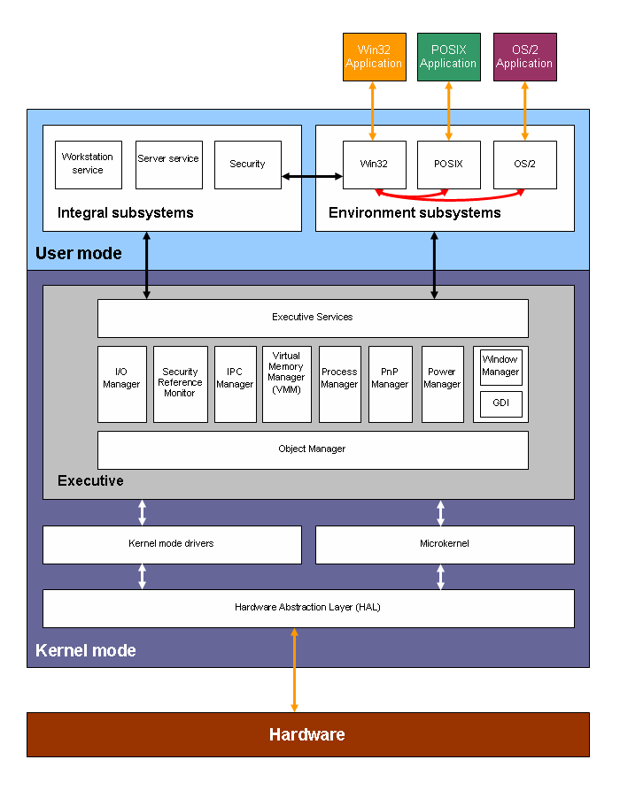

The Linux mascot, Tux, created by Larry Ewing
The Linux mascot, Tux, created by Larry Ewing
The kernel of an operating system (OS) is the central nervous system of a computer. It is the first piece of software that the computer executes, and it manages and mediates access to the hardware. Every piece of hardware needs a corresponding kernel device driver, and you need all of your drivers working before you can run any of your software. The kernel is the center of gravity of a software community, and the battle between free software and Windows is at its lowest level a battle between the Linux and Windows kernels. Microsoft has said that it has bet the company on Windows, and this is not an understatement! If the Windows kernel loses to Linux, then Windows, and Microsoft, is also lost.1
The Linux kernel is not popular on desktops yet, but it is widely used on servers and embedded devices because it supports thousands of devices and is reliable, clean, and fast. Those qualities are even more impressive when you consider its size: printing out the Linux kernel's 8,000,000 lines of code would create a stack of paper 30 feet tall! The Linux kernel represents 4,000 man-years of engineering and 80 different companies, and 3,000 programmers have contributed to Linux over just the last couple of years.
That 30-foot stack of code is just the basic kernel. If you include a media player, web browser, word processor, etc., the amount of free software on a computer running Linux might be 10 times the kernel, requiring 40,000 man-years and a printout as tall as a 30-story building.
This 40 man-millennia even ignores the work of users reporting bugs, writing documentation, creating artwork, translating strings, and performing other non-coding tasks. The resulting Linux-based free software stack is an effort that is comparable in complexity to the Space Shuttle. We can argue about whether there are any motivations to write free software, but we can't argue it already exists!
One of the primary reasons I joined Microsoft was I believed their Windows NT (New Technology) kernel, which is still alive in Windows Vista today, was going to dominate the brains of computers, and eventually even robots. One of Bill Gates' greatest coups was recognizing that the original Microsoft DOS kernel, the source of most of its profits, and which became the Windows 9x kernel, was not a noteworthy engineering effort. In 1988, Gates recruited David Cutler from Digital Equipment Corporation, a veteran of ten operating systems, to design the product and lead the team to build the Windows NT kernel, that was released as I joined in 1993.
The kernel Cutler and his team developed looks like this:

Windows NT kernel architecture block diagram. Cutler had a Windows 95 doormat outside his office; you were encouraged to wipe your feet thoroughly before entering.
Unfortunately for Microsoft, the original kernel lived on through Windows 95, Windows 98, and into Windows Me. (Microsoft also had Windows CE, a small kernel for embedded devices. Microsoft had three separate kernels for most of my tenure, whereas the same Linux kernel is used on small and big devices.)
Windows has become somewhat popular for servers and devices, but it never achieved the dominance it did on desktop PCs. Perhaps the biggest reason is that its code wasn't available for others to extend and improve upon. The Linux kernel took off because there are people all over the world, from Sony to Cray, who tweaked it to get it to run on their hardware. If Windows NT had been free from the beginning, there would have been no reason to create Linux. However, now that there is the free and powerful Linux kernel, there is no longer any reason but inertia to use a proprietary kernel.
There are a number of reasons for the superiority of the Linux kernel. But first, I want to describe the software development process. When you understand how the Linux kernel is built, its technical achievements are both more impressive and completely logical.